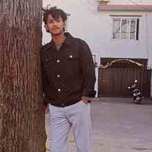

✳
WHAT I STUDYAI & convergence
Exploring how artificial intelligence connects with software, people, and real-world problems.
Hi, I’m Roshan — a second-year Global AI Convergence student exploring artificial intelligence, programming, and the ways technology can make everyday life better.

I’m building a foundation in AI and digital creation through coursework, experiments, and projects. I enjoy taking a big idea and breaking it into something I can actually build.
Exploring how artificial intelligence connects with software, people, and real-world problems.
Learning programming and web development by making small projects, testing ideas, and fixing bugs.
Working toward a future in AI engineering or entrepreneurship, creating tools that are useful and accessible.
My projects are a way to learn in public: start with a question, make a first version, and keep improving it.
A travel assistant concept to help visitors explore Nepal, compare destinations, understand travel options, and find practical guidance for their journey.
I’m always interested in learning, sharing ideas, and building useful things with others.